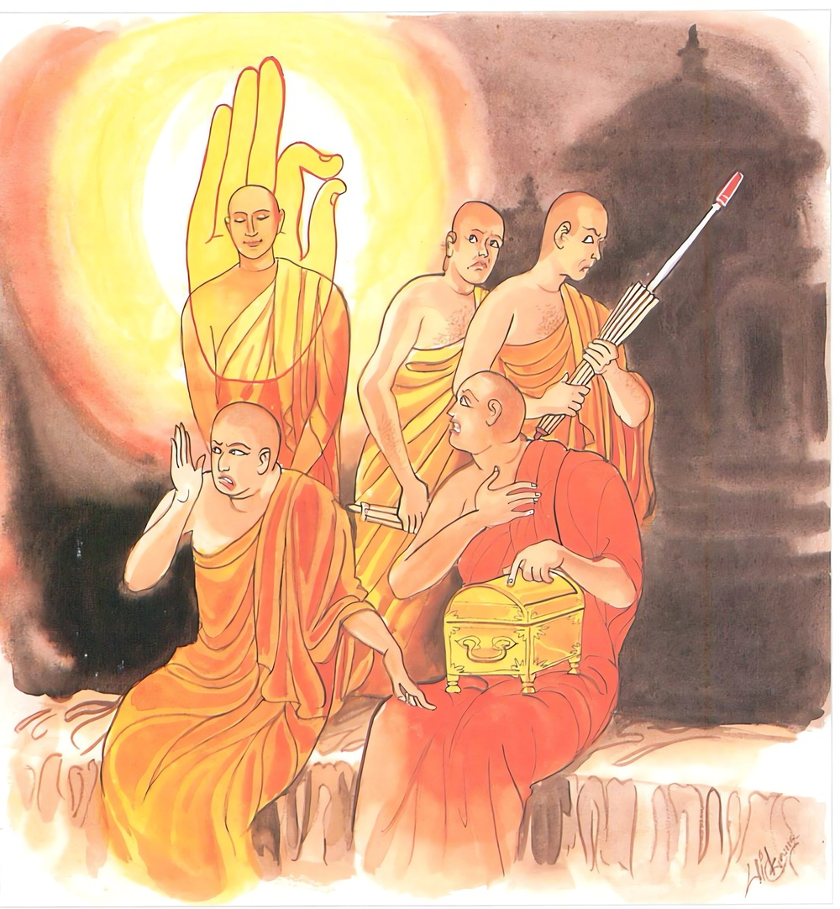

26-23 කෝපයෙන් ගැටුනු බැමිනිය
මෙම කතාව ධම්මපද අටුවාවෙන් ද කියවන්න.
අවිරුද්ධං විරුද්ධෙසු අත්තදණ්ඩෙසු නිබ්බුතං
සාදානෙසු අනාදානං තමහං බ්රූමි බ්රාහ්මණං.
විරුද්ධ ලෞකික මහාජනයා අතුරෙහි අවිරුද්ධ වූ, (පරහිංසාව සඳහා) දඬුගත් ලෞකික මහජනයා අතුරෙහි නිවුනු සිතැති, පංචස්කන්ධවිෂයයෙහි මමත්වය සැලකූ ලෞකික මහා ජනයා අතුරෙහි (පස් කඳ පිළිබඳ ව මම ය මාගේ යි) ගැණීමක් නැති ඒ වීතරාග පුද්ගලයා බ්රාහ්මණ යැ යී මම් කියමි.

බුදුරජුන් දෙව්රම් මහවෙහෙර වැඩ වසන දවසෙක එක්තරා බැමිණියක් සතර නමක් උදෙසා දන් පිළියෙල කොට බමුණාට කතා කොට “වෙහෙරට ගොසින් සඞ්ඝයා වෙතින් තෙරුන් සතර නමක් වැඩමවා ගෙණ එන්නැ”යි බමුණා වෙහෙරට පිටත් කොට යැව්වා ය. බමුණා වෙහෙරට ගොස් “මට වැඩිමහලු මහණුන් සතර නමක් දුන මැනැවැ”යි සඞ්ඝයා වෙතින් ඉල්ලා සිටියේ ය. සංකිච්ච සාමණේර, පණ්ඩිත සාමණේර, සොපාක සාමණේර, රේවත සාමණේර යන සත් අවුරුදු වයසැති සාමණේර සතර නම බැමිණියගේ දානය පිණිස බත් උදෙසන්නහුගේ නියමය පිට බමුණුගෙට වැඩියහ. බැමිණිය මාහැඟි අසුන් පණවා මග බලා සිටියා කුඩා හෙරණුන් දැක කිපියා ලිපෙහි ලූ ලුනු ඇට පුපුරන්නා සේ කෝපයෙන් පුපුර පුපුරා “තෝ වෙහෙරට ගොස් තමන්ට මුනුබුරු තරමටත් නො පොහොනා කුඩා දරුවන් සතර දෙනෙකු ගෙණ ආයෙහි ඇයි දැ?”යි බමුණාට තරවටු කළා ය. තරවටු කොට පිළියෙළ කොට තුබූ අසුන්වල ඒ සතර නමට හිඳින්නට ඉඩ නො දී මිටි පුටු සතරක් පණවාලා මෙහි හිඳිවු”යි කියා “යව වෙහෙරට ගොස් වැඩිමහලු තෙරුන් සතර නමක් වැඩමවා ගෙණ එව”යි නැවැතත් බමුණා වෙහෙරට පිටත් කොට යැවූ ය.
බමුණා ද විහාරයට ගියේ සැරියුත් මහතෙරුන් දැක උනවහන්සේට “අපගේ ගෙට වඩිනු මැනැවැ”යි ආරාධනා කෙළේ ය. උන්වහන්සේ බමුණු ගෙට වැඩියහ. ඒ වේලෙහි එහි හුන් හෙරණුන් සතර නම දැක “තමුසේලාට වළඳන්නට දැයෙක් ලැබුනා දැ?”යි ඇසූහ. ඔවුන් “නො ලැබුනේ ය” යි කී කල්හි පිළියෙල කොට ඇති බතත් සතර දෙනෙකුට ම පමණය යි දැන උන්වහන්සේ “මාගේ පාත්රය ගෙණෙව”යි බමුණා අත තුබූ තමන් වහන්සේගේ පාත්රය ගෙන්වා ගෙණ එතැනින් බැහැර වැඩිය සේක. බැමිණිය, සැරියුත් තෙරුන් දන් නො වළඳා හිස්පය ගෙණ පෙරළා වඩිනහු දැක “තෙරුන් කීයේ කිමැ?”යි බමුණා අතින් විචාළා ය. එකල්හි බමුණා “මෙහි වැඩ ඉන්නා මේ සතර නමට පමණක් සෑහෙන පමණින් පිළියෙල කොට අති බත ඒ සතර නමට ම ලැබිය යුතු ය” යි කියා ගිය බව කීයේ ය. එසේ නම් වහා ගොස් අන් මහතෙර නමක් කැඳවා ගෙණ එන්නැ”යි බමුණා නැවැතත් විහාරයට යැවූ ය. බමුණා, එවර විහාරයට ගොස් මුගලන් මහතෙරුන්ට ආරාධනා කොට උන්වහන්සේ ගෙට කැඳවා ගෙණ ආයේ ය. එහි වැඩම කළ උන්වහන්සේ බඩගින්නෙන් පෙළුණු හෙරණුන් දැක තමන් වහන්සේගේ පාත්රය ගෙණ පෙරළා විහාරයට වැඩිය සේක. ඉක්බිති බැමිණිය, “මොවුහු වළඳනු නො කැමැත්තෝ ය, එහෙයින් බමුණන් හෝම කරණ තැනට ගොස් මහලු බමුණකු කැඳවා ගෙණ එව”යි බමුණා බමුණන්ගේ යාග ස්ථානයට යැවූ ය
හෙරණ සතර නම ද උදෑසන පටන් කිසි අහරක් නො ලැබ බඩගින්නෙන් පෙළෙමින් බමුණු ගෙදර ම නැවතී හුන්හ. එවේලෙහි උන්වහන්සේලාගේ ගුණ තෙදින් සක්දෙවිඳුන්ගේ අසුන උණු වී ගියේ ය. සක්දෙව් දිවැස් යොමා බලනුයේ උදෑසන සිට එහි හුන් හෙරණුන් බඩගින්නෙන් පෙළෙන බව දැක “මා දැන් එහි යායුතු ය”යි දිරුම් කඩට ගිය බමුණු වෙසක් මවා ගෙණ බමුණන් හෝම කරණ තැනට ගොස් එතැන් බමුණන්ගේ ප්රධාන ආසනයෙහි හිඳ ගත්තේ ය. බමුණා ඔහු දැක “මාගේ බැමිණිය මූ දැක සතුටුවනු ඇතැ”යි සිතා “එන්න, අපගේ ගෙට යන්නටැ”යි ඒ බමුණු මහල්ලා කැඳවා ගෙණ ගියේ ය. බැමිණිය දුර දී ම බමුණු මහල්ලා දැක සතුටු ව අසුන් දෙකෙක අතුරණ ඇතිරිලි එක් ම අසුනෙක අතුරා “ස්වාමීනි! මෙහි වැඩ හිඳිනු මැනැවැ”යි කියා සිටියා ය. සක්දෙව් බමුණු වෙසින් ම ගෙට ඇතුල් වූයේ හෙරණුන් සතර නම දැක පසඟ පිහිටුවා වැඳ උන්වහන්සේලා වැඩ හුන් අසුන් කෙළවර බිම පලක් බැඳ හුන්නේ ය. බැමිණිය බිම හුන් ඔහු දැක “අනේ, මේ කිම, ඔබ විසින් කැඳවා ගෙණ එන ලද්දේ කවරක් ද, ඔබගේ පියා තරම් මහලු මේ මහල්ලා ගෙණ එන ලද්දේ කුමට ය, තමන්ගේ මුනුබුරු තරම් වන හෙරණුන් වඳින්නා වූ මොහුගෙන් අපට කම් කිම, වහාම මොහු සිටිය තැනකතට ගෙණ ගොස් හැර දමන්නැ”යි ගුගුළා ය. ඒ වර බමුණා කඳින් අතින් කිසිල්ලෙන් අල්ලා බැහැර කරන්නට උත්සාහ කෙළේ ද, ඔහු හුන් තැනින් නගා ගන්නට නො හැකි වී ය. බමුණු මහල්ලා එතැනින් නැගී සිටින්නට නො කැමැති වී ය. එවිට බැමිණිය “එන්න, ඔයා එක් අතකින් අල්ලා ගන්න, මම එක් අතකින් අල්ලා ගණිමි”යි බමුණු බැමිණියෝ එක් ව අල්ලා ගෙණ පිටට ගුටි බාමින් ගෙයින් පිටතට ඇද ගෙණ ගියහ. සක්දෙව් ද හුන් තැන ම හිඳ අත කර කැවීය. ඔවුහු හැරී බැලුවෝ හුන් තැන ම හුන් බමුණු මහල්ලා දැක හඬා මොරගා අතහැර දැමූහ. එකෙණෙහ් සක්දෙව් තමන් සක්දෙව් බව දැනවීය. අනතුරු ව පිළියෙළ කොට තුබූ බත ඔවුන් පස් දෙනාහටම දුන්නී ය. පස් දෙන ම ආහාර ගත් හ. ආහාර ගෙණ එකෙක් ගෙයි කැණිමඩල බිඳ ගෙණ නික්ම ගියේ ය. එකෙක් පියසි ඉදිරිපස බිඳගෙණ ගියේ ය. එකෙක් පසුපස බිඳ ගෙණ ගියේ ය, සක්දෙව් තවත් තැනක් බිඳ ගෙණ ගියේ ය. එතැන් සිට ඒ ගෙය පස් සිදුරුගේ ය යි පළට විය.
හෙරණුන් විහාරයට ගිය කල්හි එහි විසූ භික්ෂූන් වහන්සේලා “ඇවැත්නි! බමුණු ගෙදර තොරතුරු කෙසේ දැ?”යි ඇසූහ. උන්වහන්සේලා “එය අපගෙන් නො විචාරණු මැනැව, අප දුටු තැන් පටන් ඒ බැමිණිය ගින්නෙහි ලූ ලුනු කැට මෙන් ක්රෝධයෙන් පිපිරි පිපිරී අපට හිඳින්නට වත් නො දී වහා ම බමුණකු කැඳවා ගෙණ එව,යි තම හිමියා පිටත් කළා ය. ඔහු අපගේ උපාද්ධ්යායන් වහන්සේ එහි වැඩමවා ගෙණ ගියේ ය, උන් වහන්සේ අප දැක ‘මේ හෙරණුන්ට බත් ලැබිය යුතු ය යි තමන් වහන්සේගේ පාත්රය ඉල්ලා ගෙණ එතැනින් නික් ම ආහ, අනතුරුව අන් මහලු බමුණකු ගෙණ එන්නැ’යි කී විට මුගලන් මහතෙරුන් කැඳවා ගෙණ ගියේ ය, උන්වහන්සේ ද අප දැක පෙරළා ආහ, ඉන් පසු බැමිණිය මොවුහු වළදනු නො කැමැතියහ,යි කියා බමුණන් හෝම කරණ තැනින් මහලු බමුණකු ගෙණ එන්නැ,යි බමුණා යැවූ ය, බමුණා ද එහි ගොස් බමුණු වෙස් ගෙණ සිටි සක්දෙවිඳුන් කැදවා ගෙණ ආයේ ය, ඔහු එහි පැමිණි පසු අපට කෑම් බීම් දුන්නී ය”යි කීහ. “කිම, එසේ කරන්නා වූ ඒ දෙපොලට තමුන්නාන්සේලා උරණ නො වූ වහුදැ?”්යි විචාරා “උරණ නො වූ වමු”යි කී කල්හි “මොවුහු බොරු කියමින් තමන් රහත්හ යි කියා ගණිති” යි සිතා බුදුරජුන් වෙත ගොස් එබව සැලකළහ. එකල්හි බුදුරජානන් වහන්සේ “මහණෙනි! රහත්හු තමන්ට විරුද්ධ ව නැගී සිටියවුනට කවදාත් කවර කරුණක් නිසාත් විරුද්ධ ව නැගී නො සිටිති”යි වදාරා මේ ධර්මදේශනාව කළ සේක.
අවිරුද්ධං විරුද්ධෙසු අත්තදණ්ඩෙසු නිබ්බුතං,
සාදානෙසු අනාදානං තමහං බ්රෑමි බ්රාහ්මණන්ති.
විරුද්ධ වූවන් අතුරෙහි විරුද්ධ නො වූ ද ගන්නාලද දඬු ඇත්තවුන් අතුරෙහි නිවීගියා වූ ද ගැණුම් සහිතයන් අතුරෙහි ගැණුම් නැත්තා වූ ද, ඔහු මම බමුණු යි කියමි.
අවිරුද්ධං විරුද්ධෙසු = විරුද්ධ වූවන් අතුරෙහි විරුද්ධ නො වූ.
ආඝාත - පටිඝාත - පටිඝ - පටිවිරෝධ - කොප - පකොප - සම්පකොප - දොස - පදොස - සම්පදොස - බ්යාපත්ති - මනොපදොස - කොධකුජ්ඣනා - දුස්සනා - විරෝධ - චණ්ඩික්ක - අසුරොප - අනත්තමන්තා යනාදී පදයන්ගෙන් කියූ අරුත් ඇති ව සිතෙහි උපදනා ක්රෝධය යමක්හු විසින් ප්රහීණ කරණ ලද්දෙ ය. සන්හිඳුවන ලද්දේ ද නැවැත ඉපැත්මට නො සුදුසු කරණ ලද්දේ ද මාර්ගඥානාගතියෙන් දවනලද්දේ ද හේ ‘අවිරුද්ධ’ නම්. ‘විරුද්ධ’ නම්: මෙ කියූ ක්රෝධ ඇතියේ ය.
අත්තදණ්ඩෙසු නිබ්බුතං = ගන්නාලද දඬු ඇත්තවුන් අතරෙහි නිවී ගියා වූ.
අනුනට වධහිංසා කිරීමෙන් නො වැළකුනු බැවින් පරවධ හිංසා පිණිස ගන්නා ලද දඬුමුගුරු ගල්මුල් අවිගත් අත් ඇතියේ ‘අත්තදණ්ඩ’ නම්. එබන්දන් අතර නිවිසිත් ඇතියේ බහා තැබූ දඬුමුගුරු ඈ ඇතියේ ‘නිබ්බුත’ නම්.
සදානෙසු අනාදානං = ගැණීම් සහිතයන් අතුරෙහි ගැණීම් නැත්තා වූ.
රූප - වේදනා - සංඥා - සංස්කාර - විඥාන යන ස්කන්ධපංචකය “මම මි, මා අයත්” යි තණ්හූපාදාන - දිට්ඨූපාදානාදීන්ගේ වශයෙන් ගන්නේ ‘සාදාන’ නම්. එසේ නො ගන්නේ ‘අනාදාන’ නම්.
තං අහං බ්රෑමි බ්රාහ්මණං = මම ඔහු බමුණු යි කියමි.
ආඝාත ප්රතිඝාතාදීන්ගේ වශයෙන් නැගී සිටුනා ක්රෙධෙයෙන් විරුද්ධ වූ ලෝකීය මහාජනයා අතර එබඳු ආඝාත සිත් නැත්තා වූ ද අනුන් තළා පෙළා වධහිංසා කරන්නට දඬුමුගුරු ඈ අතට ගන්නවුන් අතුරෙහි බහා තැබූ දඬුමුගුරු ඈ ඇත්තා වූ ද පංචස්කන්ධය, මම මි මාගේ, යි ගෙණ එය සැතැප්පවීමෙහි යෙදී සිටින්නවුන් අතුරෙහි එබඳු ගැණීම් නැත්තා වූ ද ඔහු බ්රාහ්මණ නම් වන්නේ ය.
ශ්රාමණේරවස්තුව නිමි.